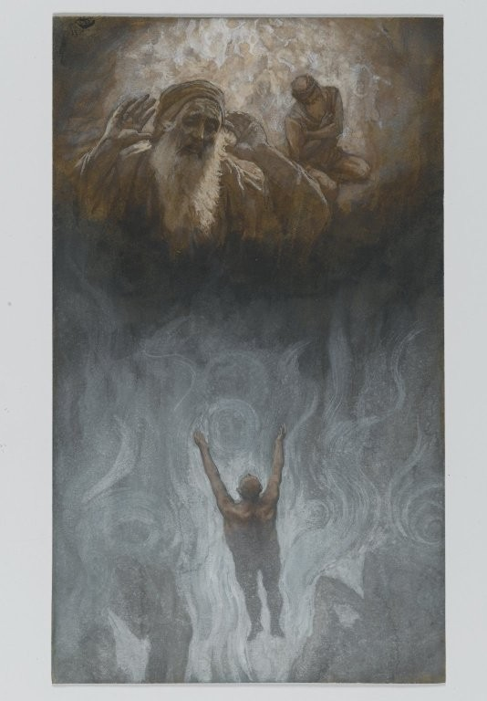

Luke 16 — The Mister Translation

The rich man’s outstretched arms answer Abraham’s raised palms directly across the picture’s own gap — Tissot paints the chasm of v26 as a literal band of empty space between warm light above and cold smoke below, with no bridge drawn between them. The seated figure beside Abraham, turned half away, is easy to read as Lazarus, though Tissot leaves him unlabeled and mostly in shadow — the parable's own asymmetry, where the poor man is named and the rich man never is, restaged as a difference of light rather than of identity.
_-_James_Tissot_-_overall.jpg){kind=link}
Translator’s Notes — verse by verse
⭐⭐⭐ “Squandering” is not a fresh word for this new parable — it is last chapter’s own verb, one chapter later. The root stands in nineteen verses of the whole New Testament in various forms, but the specific compound diaskorpizō applied to a person wasting property belongs to only two people in the whole New Testament: the younger son, who ‘squandered his estate’ in a distant country (15:13, already on these pages), and this manager, accused of the same thing one chapter later. Luke uses the verb a third time, of God himself — ‘he has scattered the proud’ in Mary’s own song (1:51, already on these pages) — but the two human uses, back to back across a chapter break, both describe a man who is not the rightful owner of what he is wasting: a son treating an inheritance he has not yet earned as already spent, and a manager treating another man’s estate as his own to lose.
The dictionary’s own oikonomos entry has named this exact scene since Luke 12:42, promising a ‘dishonest manager’ still to come; this chapter pays that promise off in its opening verse. The word names a real, delegated OFFICE, not mere slave status — which is what makes the charge against him serious enough to end a career: he has betrayed a trust, not merely failed at a task.
⭐⭐ The manager rules out the two honest fallbacks by name before choosing a third, dishonest one. Digging was common day-labor, the work of the poorest free men and slaves; begging carried a stigma sharp enough that a grown man managing a rich household’s finances would rather commit fraud than be seen doing it. Neither objection is about capability alone — ‘I am not strong enough’ and ‘I am ashamed’ are two different kinds of refusal, one physical and one social, and the parable lets him voice both before he settles on a plan that preserves his status at his master’s further expense.
“I know what I will do” (v4) echoes, in shape if not in wording, the rich fool of four chapters back, who also narrates a private plan aloud before acting on it (12:17–18, already on these pages) — two men, in two parables about money, caught mid-scheme by Luke’s narrator rather than shown only the finished act.
⭐⭐⭐ “Baths” and “kors” are each a true New Testament hapax, and this scene is the only place either one is needed. See the bátos / kóros dictionary entry: bátos, the Hebrew liquid measure, stands in exactly one verse of the whole New Testament (v6), and kóros, the largest Hebrew dry measure, likewise stands in exactly one verse (v7) — both borrowed straight from the Hebrew Bible’s own vocabulary of volume rather than translated into any Greek equivalent, a small tell that this parable’s world runs on the same units Israel’s law and commerce always had. On the commonly estimated conversions, a hundred baths of oil and a hundred kors of wheat are each worth several years of an ordinary laborer’s wages — not petty debts a household steward would notice missing, but large-scale agricultural credit, the kind a household’s whole financial health might turn on.
⚠ The manager cuts the oil debt by half and the wheat debt by a fifth — not the same discount twice. Fifty percent off the oil, twenty percent off the wheat: commentators have long noticed the asymmetry without the text explaining it, and one common (though unprovable) proposal is that the manager is simply forgiving his own commission on each contract, at whatever rate that commission happened to be — cutting himself out of the deal rather than cutting his master’s principal at all. The parable states the two numbers and never says which reading is correct.
⚠ “Praised” is easy to over-read as approval of the dishonesty itself — the Greek keeps the two separate. The master commends the manager hoti phronimōs epoiēsen, ‘because he had acted SHREWDLY’ — a word about practical intelligence, not about ethics (the same root behind the ‘sensible manager’ of 12:42, already on these pages, this same dictionary entry’s anchor verse). The narrator’s own aside still calls him ‘the manager OF UNRIGHTEOUSNESS’ in the same breath (v8) — the parable never asks a reader to admire the fraud, only to notice that a crooked man plans for his future with more urgency than Jesus’s own hearers plan for theirs. ‘Sons of light’ is a phrase this Gospel uses nowhere else, though it recurs at John 12:36 and 1 Thessalonians 5:5 (both not yet on these pages) — in every New Testament use, a self-description for the community that follows Jesus, here turned, uncomfortably, into the LESS shrewd party in the comparison.
⭐⭐ “Mammon of unrighteousness” is this chapter’s own vocabulary, said three times (vv9, 11, 13) about the same thing. Mamōnas was already fixed as this library’s untranslated term at Matthew 6:24, and v13’s own closing line will repeat that verse almost word for word (see that verse’s own note). Here Jesus adds a qualifier Matthew’s version never carries — money is called ‘unrighteous’ not because holding it is a sin, but because the parable has just shown exactly how it is made and kept: by men like this manager, cutting deals that serve themselves. The command is nonetheless to USE it, deliberately, to make friends — not to renounce it, and not to trust it, a distinction the next four verses spend building out.
⭐⭐⭐ Verse 13’s closing line is not merely similar to Matthew’s Sermon on the Mount — it is the same Greek sentence, almost unchanged. Compare Matthew 6:24 (already on these pages): both open ‘No one/servant can be a slave to two masters,’ both run through the identical hate/love, hold-to/despise pairing in the identical order, and both close on the identical six-word sentence, ou dynasthe theō douleuein kai mamōna, ‘you cannot be slaves to God and to Mammon’ — letter for letter the rarest kind of agreement between two Gospels that are not translating the same source narrative. Matthew places the saying inside teaching about anxiety over food and clothing; Luke places it at the close of a parable about a fraud who serves his own interest under cover of serving his master’s — the identical sentence landing as the punchline of two entirely different arguments.
Verses 10–12 are Luke’s own bridge, found in no other Gospel, and they run the parable’s logic in reverse: the manager was tested with SOMEONE ELSE’S money and proved untrustworthy; the saying generalizes that failure into a principle — little and much, another’s and your own, unrighteous mammon and ‘the true riches’ are each pairs where the first member is a TEST for the second, not a separate category from it.
⭐⭐⭐ “Abomination” stands in six verses of the whole New Testament, and this is the only one where it names something as unremarkable as being well thought of. Every other New Testament use of bdelygma is either half of the fixed phrase ‘the abomination that desolates’ (Matthew 24:15; Mark 13:14, both already on these pages) or Revelation’s vocabulary for Babylon’s cup (Revelation 17:4–5, not yet on these pages) and the ‘abominations of the earth’ barred from the holy city (Revelation 21:27, already on these pages). Here alone the word stands bare, with no genitive attached, aimed at ‘what is exalted among men’ — social standing, reputation, the very currency the Pharisees are said to love in v14. The word usually reserved for idols and desecrated temples is turned, for one verse, on ordinary human esteem.
“Lovers of money” (philargyroi, v14) is the only time this Gospel names the Pharisees this specific way, though the charge has been building since the woes of 11:39 (already on these pages, greed and wickedness inside the cup) — this chapter’s teaching on mammon is not addressed to them in the abstract; it answers a group the narrator has just told the reader loves exactly what the teaching is about.
⭐⭐⭐ Luke and Matthew agree on the boundary and disagree on almost everything around it. Compare Matthew 11:13 (already on these pages): Matthew reads ‘ALL the prophets and the Law prophesied until John,’ naming the prophets first and supplying a verb, ‘prophesied’; Luke reverses the order to ‘the LAW and the prophets,’ drops ‘all,’ and states no verb at all — the plainest reading supplies ‘were,’ not ‘prophesied,’ which quietly changes the claim from what the Law and Prophets DID (they prophesied) to what ERA they belonged to (they lasted until John). The two Gospels agree that John marks a hinge; they do not agree on what, exactly, hinged.
⭐⭐ Verse 17’s tittle-of-the-law saying is close enough to Matthew’s to be the same tradition, and far enough to be its own sentence. Compare Matthew 5:18 (already on these pages), which names BOTH the iota and the little hook and adds a time clause, ‘until all things come to be’; Luke keeps only the hook (keraia) and states the comparison without qualification — heaven and earth passing away is EASIER than one stroke of the Law failing, full stop, no end-date attached. Placed directly after v16’s claim that something has changed since John, v17 reads almost like a caution against over-reading v16: the era has turned, but the Law itself has not become negotiable.
⭐⭐⭐ Luke’s divorce saying reads like Mark’s first half and Matthew’s second half, joined — and the one clause common to both those parallels is the one clause missing here. The opening almost matches Mark 10:11 (already on these pages), ‘whoever divorces his wife and marries another commits adultery,’ except Luke drops Mark’s own ‘against her’ (ep’ autēn) and trades Mark’s subjunctive verbs for participles. The second half all but reproduces Matthew 5:32’s own addition, ‘and whoever marries a divorced woman commits adultery’ (already on these pages) — but Matthew states that same sentence twice, at 5:32 and again at 19:9 (already on these pages), and BOTH times attaches an exception: ‘not for sexual immorality.’ Luke keeps neither Mark’s own second clause (about a wife divorcing her husband, 10:12, already on these pages) nor Matthew’s exception — the shortest, hardest version of the saying that survives in any Gospel, built from pieces of two others.
⚠ The saying sits here with no narrative connection to anything around it — no question asked, no Pharisee testing him, unlike Matthew’s and Mark’s versions, both prompted by a direct question about divorce’s legality. Luke simply places it between the Law-and-Prophets saying and the parable that follows, without explaining the placement.
⭐⭐⭐ This chapter tells two rich-man parables, and both begin with the same Greek words. ‘There was a rich man’ (Anthrōpos tis ēn plousios) opens both v1 and v19, word for word except for one added connective — a deliberate pairing rather than a coincidence of stock phrasing, setting a rich man who is praised for shrewdness with someone else’s money against a rich man who is condemned for indifference with his own.
⭐⭐⭐ Lazarus is the only character given a personal name in any parable Jesus tells in this Gospel. Every other human figure across Luke’s parables — the sower, the good Samaritan, the rich fool, the prodigal’s father and both his sons, the persistent widow, the Pharisee and the tax collector — goes unnamed; only Abraham carries a name here, and he is a historical, scriptural figure Jesus invokes rather than an invented character. ‘Lazarus’ transliterates the Hebrew Eleazar, ‘God has helped’ — a name-pun this translation surfaces rather than glosses past, since the beggar who has nothing in life turns out to be the one the name was true of all along. ⚠ Tradition has long called the rich man ‘Dives,’ simply Latin for ‘rich man’ (the Vulgate’s own homo quidam erat dives) mistaken for a proper name over centuries of retelling — a naming habit built the same way as last chapter’s own ‘prodigal son,’ a title supplied from outside a Greek text that never uses it.
⭐⭐⭐ “Abraham’s side” borrows the same word this Gospel already used for the pocket a garment’s fold makes. See the kolpos dictionary entry: the word stands in six verses of the New Testament, and this scene uses it twice in a row (vv22–23) for a banquet’s place of honor — reclining directly against the host, the position John’s Gospel will later give the beloved disciple at the Last Supper (John 13:23, not yet on these pages). Earlier in this same Gospel the word named an ordinary garment-fold used as a pocket (6:38, already on these pages); this scene reaches instead for the word’s banquet sense, matching John 1:18’s ‘at the Father’s side’ (already on these pages) rather than its own earlier use. A beggar who was fed on scraps under a rich man’s table now reclines in the one position at Abraham’s table reserved for an honored guest.
⚠ The shelf splits three ways on this single word, and the Reina-Valera corrects itself across its own two editions. The KJV and Geneva both print plain ‘hell’ at v23, importing later fire-and-punishment imagery onto a word that, per the hadēs dictionary entry, names only the grave-realm of the dead; the Douay-Rheims, translating the Vulgate, drops the word from v23 entirely (‘when he was in torments’) because its own Vulgate had already inserted an unwarranted ‘in hell’ one verse earlier, at v22’s bare ‘was buried.’ The ASV and the NWT 1984 both transliterate, ‘Hades’; the NWT’s own 2013 revision changes course again, to ‘the Grave’ — two English editions of the same translation choosing two different renderings of the identical Greek word. The Reina-Valera shows the same correction the Asherah dictionary entry already documents for a different verse: the 1909 edition’s ‘infierno’ becomes the 1960 revision’s plain transliteration, ‘el Hades.’
⭐⭐⭐ “Child” pays off a promise made one chapter ago, to the letter. Last chapter’s own closing note named this exact verse in advance: teknon would be ‘spoken once more, without this chapter’s tenderness, by Abraham to the rich man in Hades’ — and here it is, the same gentle word the father used for his aggrieved elder son (15:31, already on these pages) and Mary used for a lost boy found in the temple (2:48, already on these pages), now addressed by Abraham to a man in torment who is beyond any rescue the word once accompanied. The word is identical; everything around it has changed. This is the third and final time this Gospel uses teknon as direct address, and the only one with no comfort attached to it at all.
⭐⭐⭐ “A great chasm” is a true New Testament hapax. See the chasma dictionary entry: the word stands in exactly one verse of the whole New Testament, this one. The verb ‘has been fixed’ (estēriktai) is a perfect tense — an action already completed whose result simply stands — and the parable states it as an existing fact about the afterlife rather than a punishment still being carried out. Abraham’s answer to the rich man’s FIRST request (water for his tongue) is that the chasm makes it structurally impossible, not that mercy is being withheld; the sympathy in ‘Child’ and the flat impossibility of ‘cannot cross’ sit in the same two verses without contradiction.
⭐⭐ The rich man’s second request moves from his own relief to his brothers’ warning — and Abraham answers it with the same sufficiency principle twice, in reverse order. v29 states the claim plainly (‘they have Moses and the Prophets’); v31 restates it as a conditional after the rich man objects, closing the parable on the stronger form of the same sentence rather than a new argument. The five unnamed brothers are the parable’s only characters left offstage entirely — the story ends without ever showing whether Abraham’s prediction about them is right.
⚠ Read against how this Gospel itself ends, Abraham’s closing line invites, without forcing, a further irony. The parable’s claim is that a warning from beyond the grave would not, by itself, produce belief where Moses and the Prophets had already failed to. This Gospel's own ending is more complicated than flat unbelief either way — two disciples on the road to Emmaus fail to recognize the risen Jesus until he opens the Scriptures to them (24:13–35, already on these pages), a scene that could be read as confirming Abraham’s claim (the Scriptures do the convincing, not the sighting) as easily as complicating it. The parable does not resolve this on its own, and this translation states the observation rather than the verdict.
Patterns worth carrying forward
Where this translation keeps the words exact / distinct: bátos and kóros (vv6–7) kept transliterated as the two genuine hapax measure-words they are, rather than converted into modern units and losing the Hebrew loanword entirely; chasm (chasma, v26) kept as the flat, single-verse word it is; and Hades (v23) kept transliterated rather than softened to ‘hell,’ on the same grounds the hadēs dictionary entry already sets out.
Echoes paid. The oikonomos dictionary entry’s own forward promise, standing since Luke 12:42, is paid at v1. Last chapter’s own squandering verb (15:13) returns at v1, now of a manager instead of a son. And last chapter’s own closing promise — that teknon would return ‘without this chapter’s tenderness’ — is paid exactly, at v25.
Echoes planted. Kolpos’s banquet sense, used twice here, will be used once more of the beloved disciple at the Last Supper (John 13:23, not yet on these pages). And the divorce saying’s bare, exception-free form (v18) stands unresolved against Matthew’s two exception-bearing versions of the same tradition, a divergence this library has now stated on both sides without settling it.
Next in sequence: Luke 17 — a call to forgive without limit, ten lepers cleansed and only one who turns back, and a kingdom Jesus says is already “in your midst.”